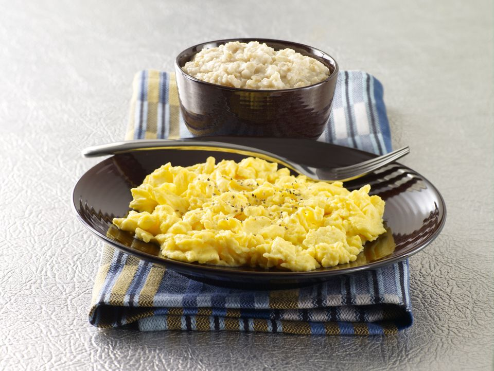

Gym Bros' favourite breakfast. Bro.

Description
Hi everyone! For those who don't know me, apart from being a TOP student, I'm also
a bodybuiling enthusiast. Not a gym bro. Sure? Don't really know. Bro!
By the way, I've been trained by one of the most selective culinary schools in France,
so if someone reading gets really confused just don't bothered. It's your first time
doing it. Not mine!. So you just have to read carefully and do it in a slow fashion.
Got it? Get ready bro.
Ingredients
- Eggs(from a chicken preferably)
- Extra virgin olive oil(notice how S-P-A-N-I-S-H I am)
- Oatmeal
- Skimmed Milk
- Optional: Cinnamon and some magical pills (to get ultra jacked)
Steps (read carefully)
- Break the eggs and cooked them in a pan with a bit of extra virgin olive oil
- Combine the oatmeal and the milk inside a bowl. Mix it. Heat it in the microwave.
- Optional: Add the cinnamo once the oats are cooked
- Not optional if you wanna be super ultra-instinct mode jacked: Eat the pills